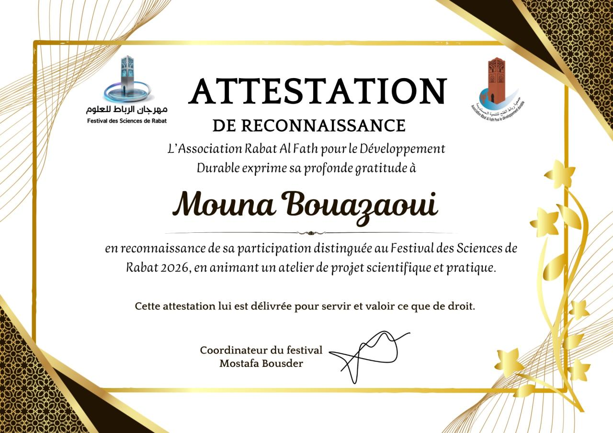

Festival des Sciences de Rabat 2026
Détection en temps réel de capteurs IoT défaillants
Dans le cadre du Festival des Sciences de Rabat 2026, j'ai participé, au sein du Club IT de mon école, à la conception et à la présentation d'un système de détection en temps réel de capteurs IoT défaillants.
Ce projet vise à identifier automatiquement les anomalies, à localiser les capteurs défectueux et à générer des alertes afin d'améliorer la fiabilité et la continuité des systèmes connectés.
- Détection des anomalies en temps réel
- Localisation des capteurs défectueux
- Génération automatique d'alertes